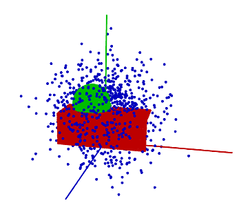
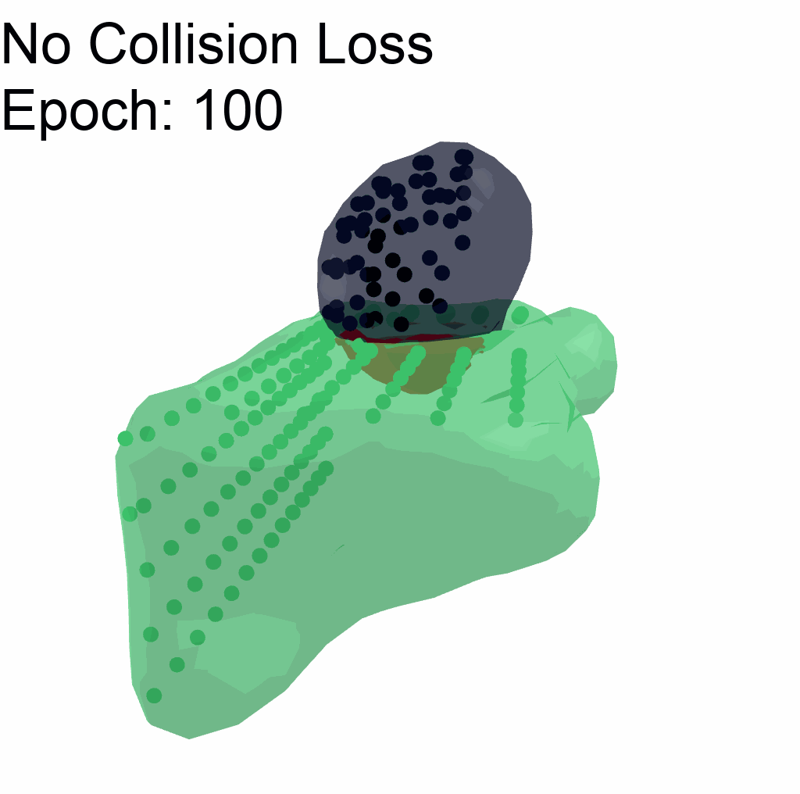
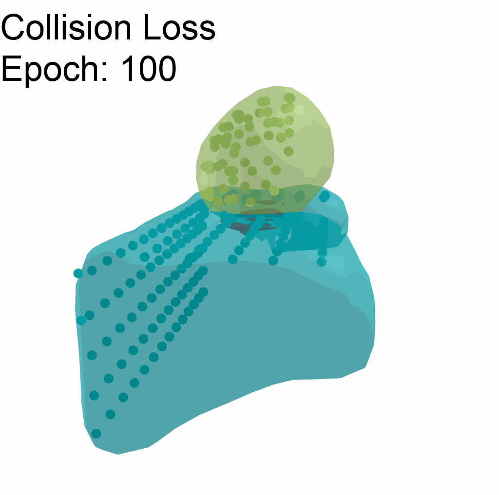

2024 Oct 04
Last time, the things I said I would work on this week were:
I worked on 1 and then as part of the way to 2 I tried out doing a “collision” loss. Stuff kind of got busy this week, I presented V-PRISM [1] at the robotics seminar. The slides I used can be found here. I also made drafts of GRFP statements (links in the corresponding section). Between all this, getting ready for IROS, and some other stuff, I didn’t have too much time to work on this project.
Inspired by [2]. I penalize collisions with a loss of the following form:
L_\text{collision} = \mathbb E \left[ \max\left(0, \sum_i \sigma(w_i^\top \phi(x)) - 1\right) \right].
In practice, to approximate the expected value, I sample some points in the area of the scene, in the example below, those sampled points might look something like this:

Then, I sum over the occupancy probabilities of objects and penalize when the probabilities sum to more than 1.
Here I have an example of using collision loss vs not using it on a simple scene. The red in the graphics is the intersection of the two meshes:
 
As you can see, the collision loss is not perfect, but it does help penalize the collision. Note that for this example, it uses gradient descent, and there is not a prior.
I made drafts of both the statements for the NSF-GRFP. Here they are:
I think the Personal Statement still needs more work (I mean both need more work, but the Personal Statement needs it more). I also will need to make a better picture for the research statement I think.
The important due dates are:
Next week is spring break. We can decide whether or not we want to do a meeting then. As far as things I want to work on: